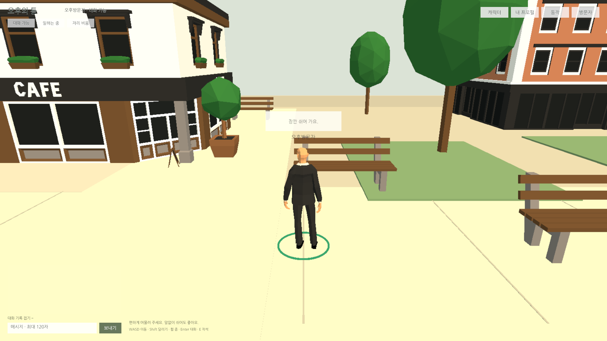
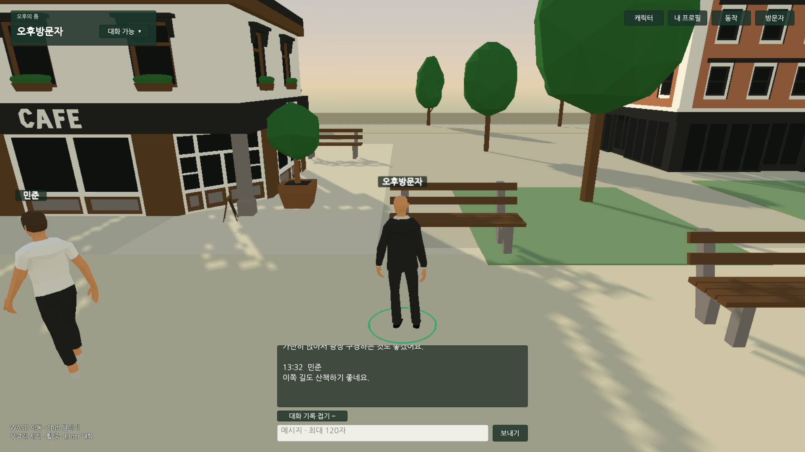
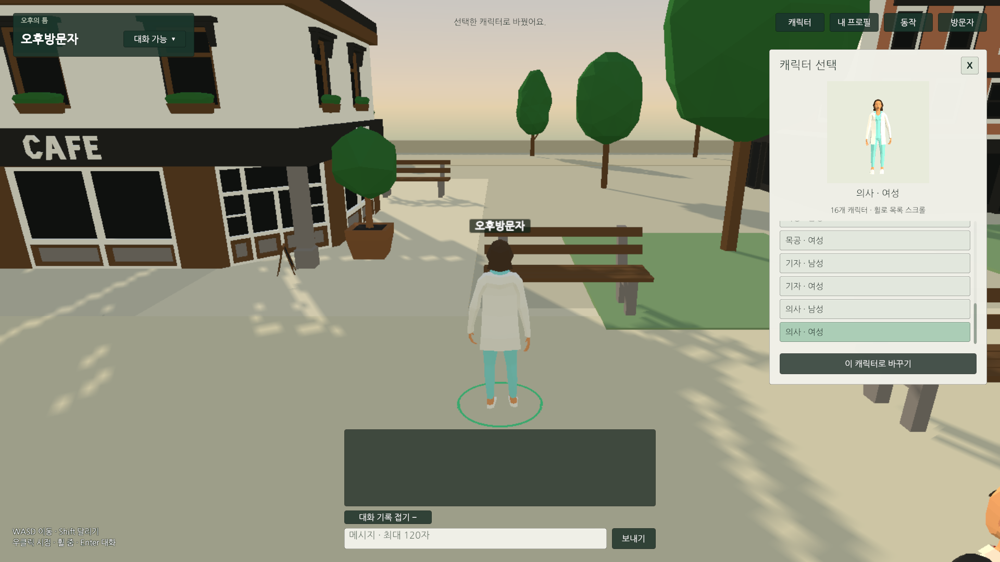
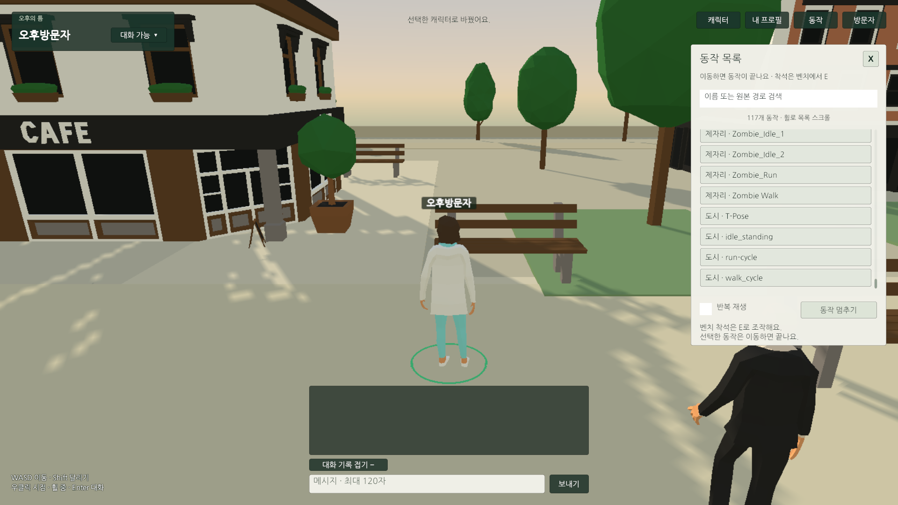
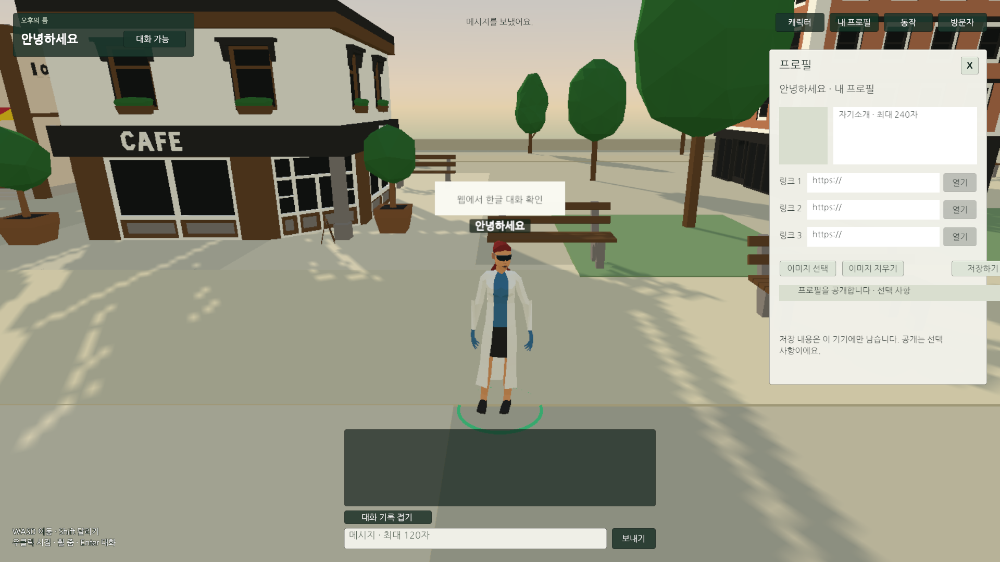
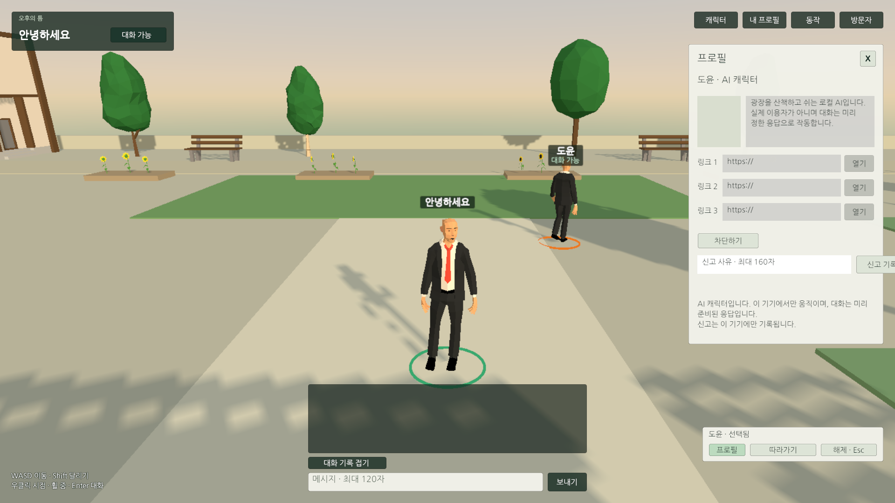
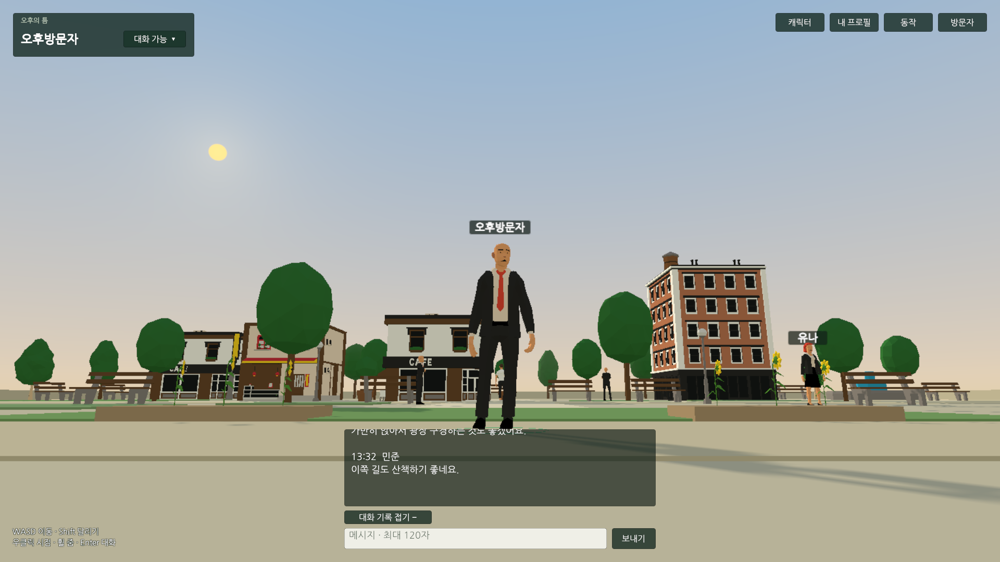

Tracefolio REPORTS & ISSUES
Tracefolio REPORTS & ISSUES읽기 쉬운 HUD·자연스러운 이동·넓어진 오후 광장과 로컬 AI 보충
완료중앙 채팅·상태 팝업·가상 스크롤 목록·비모달 창·Enter 포커스·이동/추적을 개선했습니다.80×64m 광장과 하늘·태양, 클라이언트 최소5명 보충을 적용하고 최종 실제 웹을 검사했습니다.
작업 결과
씬/프리팹·자체 코드에 적용하고 최종 Unity Play93개와 실제 Chrome/Edge 웹 검사를 통과했습니다. 외부 원본은 보존합니다. 서버를 제어하거나 멀티플레이를 추가하지 않았습니다.
변경 내용
적용 내용
- 좌상단 닉네임·상태, 머리 위 이름표를 어두운 배경/밝은 글자로 바꾸었습니다. 상태는 작은 팝업이고 상세 창은 X로 닫습니다.
- 채팅은 하단 가운데600px,18px 글자와 반투명 어두운 기록 배경으로 바꿉니다. 상세 창을 열어도 다른 메뉴/월드 조작이 가능하며 실제 입력창 편집 중에는 이동을 막습니다. Enter 포커스는 UI Submit 다음 프레임에 적용합니다.
- 캐릭터16개·일반 동작117개를 스크롤 목록으로 제공합니다. 씬의10개 행을 재사용합니다. 착석/전환30개는 일반 목록에서 제외하고 원본 카탈로그·벤치 착석을 보존합니다.
- 클릭 경로6m 이상은 달리기, 도착2.8m 이내는 걷기입니다. 가속/감속과 거리별 추적 속도를 적용하고 카메라 강제 회전을 제거합니다. 수동 입력·입력창·대상 이탈 시 추적을 중단합니다.
- 광장48×38→80×64m(면적 약2.81배). 산책로·분수 테라스·서쪽 쉼터·화단·상점·나무18개·총 벤치12개·저장 NavMesh를 배치합니다. 자체 텍스처 없는 하늘/태양과 기존 태양 광원을 연결합니다.
- 실제 인원(본인 포함)5명 미만이면 각 클라이언트가 부족분만 로컬 AI로 채웁니다. 현재 멀티플레이 연결이 없으므로 기본은 본인1+AI4입니다.
SetHumanPopulation은 향후 인원 수신부에서 호출할 연결 지점이며 서버 생성/동기화는 없습니다. - 이름표·대화·방문자 목록의 AI 꼬리표와 반복 자기소개를 없애고 일상 문구·발화 간격을 적용합니다. 프로필에는 AI 캐릭터와 기기 내 준비된 응답임을 명시합니다.
추가 보완: 일반 실행의 초당 진단 JSON/프레임 배열 발행을 끄고 측정 시에만 활성화했습니다. 실제 웹에서 발견한 자동 이동 중 동작 선택 충돌은 자동 경로/추적을 반환한 뒤 동작을 재생하도록 수정했습니다.


검증
| 빌드/브라우저 | AI | FPS 중앙값 | 프레임 p95 ms | 최대 ms | 전경 CPU 1코어 % | 배경 CPU % |
|---|---|---|---|---|---|---|
| compare-before-0 | 0 | 30.01 | 34.0 | 34.0 | 10.20 | 2.497 |
| compare-before-6 | 6 | 30.01 | 34.0 | 133.0 | 13.87 | 0.599 |
| compare-before-12 | 12 | 30.01 | 34.0 | 118.0 | 14.70 | 0.448 |
| final-0 | 0 | 30.01 | 34.0 | 36.0 | 9.07 | 0.324 |
| final-6 | 6 | 30.01 | 34.0 | 100.0 | 12.77 | 1.340 |
| final-12-long | 12 | 30.01 | 34.0 | 142.0 | 14.61 | 0.014 |
| final-edge-6 | 6 | 30.01 | 34.0 | 83.0 | 10.64 | 0.344 |
최종 산출물 24596788바이트(24.60MB), 직전24.14MB 대비 약1.88% 증가입니다. 테스트 PC는GTX970/D3D11 WebGL2,1920×1080,목표30FPS입니다. 같은 PC·카메라 설정·캐릭터를 사용했지만 AI 랜덤 행동과 OS 부하가 달라 작은 CPU/로딩 차이를 개선으로 단정하지 않습니다. CPU는 renderer TaskDuration의 단일 코어 비율이며 전체 PC CPU가 아닙니다.
- 최종 Native Play93개: 입장·닉네임·목록 끝/검색/절대 항목 선택·비모달 이동·Enter·프로필 AI 안내·최소 인원0/1/2/4/5/6/12와 음수/큰 수·거리별 이동·추적 실이동/정지/수동 중단·자동 이동 중 동작·확장 NavMesh·착석/기립을 확인했습니다.
- 최종 웹은 실제 포인터/휠/키와 IME 조합을 사용했습니다. UI/이동 기능 · 실제 AI 클릭/프로필/따라가기 · AI12명120초 · Edge · 진단 없는 일반 실행. 실제 탭 숨김·5FPS/AI 중단·복귀와 WASM 메모리도 검사했습니다. 일반 실행 검사에서는 진단 객체가 계속 생성되지 않는 것을 확인했습니다.
- 최종 빌드 · 소스/산출물 SHA · 정리·컴파일: 임시 Editor 도구 제거 후 Runtime38/RuntimeEditor38/Editor1 컴파일 통과.





편집/연결 계약 · 원본 이미지 크기와 내보내기 제한.
실패 기록도 보존했습니다. 이전 빌드의 창 이동/Enter 문제와 자동 이동 중 동작 취소를 실제 웹에서 재현했습니다. Editor와GameView 입력 상태를 혼동한 검사, 이동 AI의 오래된 화면 좌표, Play 종료 직후 저장 복원 대기 문제는 게임 수정과 분리해 원인을 확인하고 재검사했습니다. InputSystem1.19의 설치된 공식 테스트 설정을 참고하여 임시 복제 설정/가상 입력 장치로 실제 Player 행동을 판정했습니다.
교훈 검토: 이번 버전의 입력 상태·재검사 근거는 프로젝트 QA에 기록합니다. 기존 전역의 근거/실행/원본 보존 원칙과 중복되어 전역 지침 추가·통합·변경 없음. 최신 AI 표시·최소 인원 선호는 프로젝트 AGENTS에 통합했습니다.
남은 사항
실제 서버 인원 수신/멀티플레이 연결은 없습니다. 현재1인 기준4AI이며 향후 클라이언트 인원 수신부만 연결하면 됩니다. 수시간 안정성·다양한 GPU/화면 비율·모바일 성능은 이번 짧은 검사로 확정하지 않습니다. 최대 프레임 지연·Managed/JS 메모리 추이는 각 원자료에 보존하며 평균30FPS를 순간 지연0으로 해석하지 않습니다. WebGL 시작 시의 INVALID_ENUM/오디오 자동재생 경고는 원자료 warnings에 남기고 JavaScript 예외와 구분합니다. 에셋 구매 증빙/서비스 게임의 인터넷 배포는 이번 범위가 아닙니다. Affinity의 프로젝트 경로 접근이 거부되어 원본 PNG를 사용했고 재압축/GIF는 미실행입니다.
작업 시간
- 제안 시간: 최초60
90분 + AI 추가 요청1020분(합계70~110분) - 실제로 완료된 시간: 2026-11-04 12:21:07 KST 시작 → 구현·최종 웹 검증 2026-11-04 13:45:56 KST, 84분49초. 이후 공개 배포/외부 접근은 별도 확인.
- XERJ: 미사용 — XERJ MCP/프로젝트 검색 스크립트 미제공. rg·현재 소스·설치 패키지 공식 테스트·Unity Play·실제 CDP 브라우저 계측으로 대체.